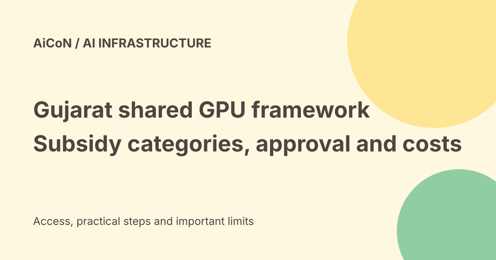

Gujarat GPU-as-a-Service: reported subsidy, approvals and cost checks
September reporting says Gujarat operationalised a shared GPU-as-a-Service framework managed by Gujarat Informatics Limited. It describes full subsidy for specific government users and selected startup use cases, not free compute for every startup. The final framework and applicant guidelines were not recovered from a primary government document in this check.

What does GPU-as-a-Service mean?
A GPU is a processor used for workloads such as AI training and inference. GPU-as-a-Service lets an approved user access shared computing capacity rather than buying and operating the hardware.
Shared capacity still needs allocation, software, storage, data transfer and an owner for the job. Access to a framework is not the same as a running project.
What was reported?
IANS reported the rollout on 23 September 2026. ETEnterpriseAI also describes GIL managing provisioning, operations, monitoring and administration under the state's AI Action Plan.
These are published news reports about the government decision. The guide does not treat their wording as a substitute for the actual approval letter, rate sheet or detailed applicant rules.
Who may be covered?
The reports describe Gujarat government departments, government institutions, boards, corporations, autonomous bodies and other organisations approved by the Science and Technology Department.
They also describe selected AI startups and other startups subject to approval and resources. Do not infer that every Indian college, private company or individual can register for subsidised compute.
Reported full-subsidy categories
The reports say eligible state government departments, government institutions and government educational institutions receive one hundred percent subsidised infrastructure access.
They also say the subsidy covers production rollout of approved use cases from startups selected under the AI Innovation Challenge at the AI Centre of Excellence. That is narrower than all startup experimentation or every company expense.
Other startups and the fee
IANS and ET report that other startups pay the actual GPU service cost plus GIL's applicable consultancy charge. The described consultancy fee is seven percent of the actual GPU services cost procured from IndiaAI-empanelled cloud providers.
This is a reported policy figure, not a verified current invoice total. Confirm the written calculation, taxes and which costs the fee applies to before budgeting.
Allocation is not unlimited
The reporting says decisions depend on technical feasibility, available resources, approved use cases, priority and government policies.
A subsidised project can still wait for allocation or receive a smaller resource window than requested. Confirm the GPU type, memory, hours, scheduling and maximum job duration needed for your workload.
Do not confuse procurement with user access
The official GIL website has infrastructure tenders, including GPU procurement. A tender is an instruction to suppliers, not a free-compute application for startups.
We did not recover the final GPUaaS framework or a current user application path on the inspected primary pages. No form, opening date or account route is invented here.
A cost estimate needs more than a rate
Ask whether storage, network traffic, licences, managed support, idle time and failed jobs are charged separately. Check currency, taxes and cancellation or minimum-use terms.
A seven-percent fee applied to one cost base is not necessarily seven percent of every project expense. Get the complete quote and approval scope.
Data and responsible-use requirements
The reports describe restrictions to approved purposes and compliance with information-security, privacy, cybersecurity and responsible-AI policies.
Do not move government, customer or student records to a provider merely because a GPU allocation exists. Confirm data location, retention, access, deletion and organisation permission first.
Practical steps for an interested team
- Identify the organisation and project owner.
- Ask GIL or the responsible department for current applicant guidelines.
- Confirm the eligibility and subsidy category in writing.
- Specify compute, memory, storage and duration.
- Use approved data and a clear test plan.
- Get the allocation and complete charges.
- Confirm security and provider terms.
- Monitor consumption and completed outcomes.
No government request, startup application, GPU session or paid resource was opened for this guide.
India and Kerala verdict
This is a Gujarat-scoped framework, not a national unconditional grant. A Kerala startup should ask whether it is eligible under the actual current rules rather than treating the headline as an offer.
The reported IndiaAI-empanelled provider route does not automatically create IndiaAI eligibility for every applicant. Keep the two programmes' approvals separate.
What changed since the original post?
We label the subsidy and fee as reported policy details, state the missing primary framework verification and remove any implication of instant open access. A government guideline and approval are still needed before relying on costs or eligibility.
Frequently asked questions
Is this free for every startup?
No. The reporting distinguishes selected subsidised use cases from other paying startups.
Is a GIL tender the application?
No. Supplier procurement and user access are different.
Can an outside-state team assume access?
No. Obtain the current rules and approval.
Sources: IANS September rollout report · ETEnterpriseAI rollout report · Official GIL website: final applicant framework not recovered. Checked 7 October 2026.